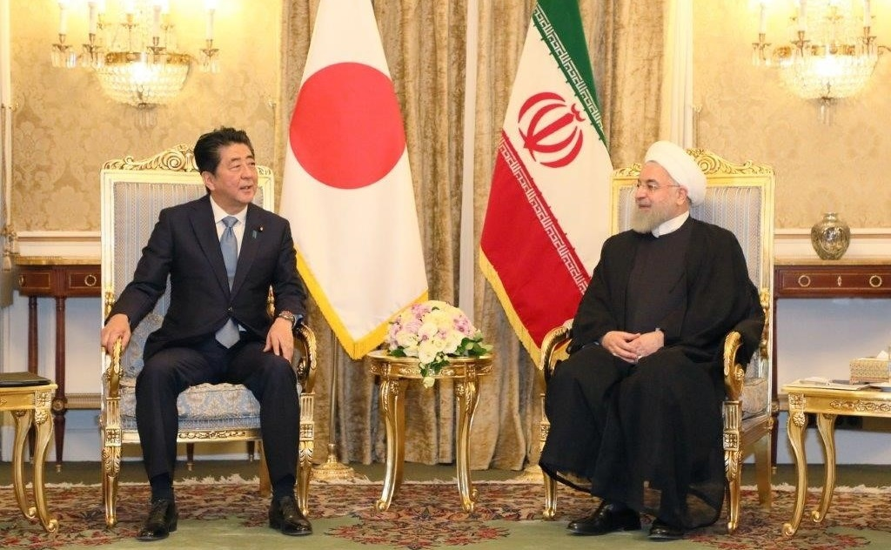

How Trump blamed bin Laden’s crimes on Iran to stir war
Donald Trump blamed al-Qaeda kingpin Osama bin Laden’s crimes on Tehran in his historic speech on the Iran nuclear deal, and the media missed these huge lies.
By Ben Norton / AlterNet
Donald Trump claimed during his campaign that he would change U.S. foreign policy, opportunistically condemning Hillary Clinton over her support for the 'failed policy of … regime change.'Pundits predicted that Trump would usher in a new era.But as president, the far-right billionaire has doubled down on key elements of the bipartisan U.S. foreign policy consensus, resulting in a dangerous escalation of the so-called War on Terror.
Trump has placed aggression against Iran and staunch support for the regimes in Saudi Arabia and Israel front and center.While previous administrations assumed a similar agenda in the Middle East, Trump has embraced anti-Iran fervor to an unprecedented degree.
Trump has gone so far in his anti-Iran fervor that he has wound up whitewashing the crimes of al-Qaeda, blaming Tehran for past attacks that had actually been overseen by Salafi-jihadist leader Osama bin Laden.
In his anti-Iran speech in October, Trump tried to pin al-Qaeda bombings on Tehran, using ambiguous rhetoric that is reminiscent of the language alleging Iraq’s nonexistent weapons of mass destruction.Some media outlets that were critical of Trump’s speech and its many factual errors failed to draw attention to his whitewashing of al-Qaeda.
One of the most blatant acts of aggression yet committed by President Trump took place on October 13.In a fire-and-brimstone speech on Iran, the billionaire commander-in-chief announced his plans to 'decertify' the nuclear deal the United States reached with Iran and several other large countries in 2015, and declared that he will impose harsh new sanctions.
The announcement was not only outrageous, it was baseless: the U.S. cannot unilaterally axe a deal that was also agreed to by the European Union and the other four members of the United Nations Security Council — China, Russia, the United Kingdom and France.
Even more scandalous was Trump’s attempt to justify his 'decertification' by citing a litany of falsehoods about Iran.The most obvious lie Trump told was that Iran violated the nuclear deal, officially known as the Joint Comprehensive Plan of Agreement (JCPOA).
In the past, the Trump administration reluctantly admitted that Iran was complying with the agreement.But in his desperation to sabotage the nuclear deal, Trump still claimed that Iran violated the 'spirit' of the JCPOA.
This unfounded assertion was discredited this October, when the director-general of the International Atomic Energy Agency reaffirmed that Iran indeed continued to fulfill its commitments under the JCPOA, and that IAEA inspectors 'are discharging their responsibility without problem.'
But this was only one of an assortment of lies Trump wielded to ramp up tensions with Iran and undo the historic US-Iran nuclear deal.
Trump’s diatribe this October was punctuated with false accusations against Iran for attacks that were actually carried out by al-Qaeda.
Just as U.S. officials lied to try to falsely link Iraqi dictator Saddam Hussein to al-Qaeda in order to justify the illegal 2003 U.S. invasion of Iraq, the Trump administration has tried to outlandishly link Shia-majority Iran to the Salafi-jihadist extremist group it has gone to war with in Syria and beyond.
In his speech, Trump falsely blamed Iran for al-Qaeda’s 1998 bombings of the U.S. embassies in Kenya and Tanzania, claiming, 'Iranian proxies provided training to operatives who were later involved in' the attacks.
This intentionally obscure phrasing leave many questions: What are 'Iranian proxies'?What kind of training did they receive?How were those 'operatives' involved in the attacks?The answers were never provided, and the phrasing was left as ambiguous as possible to implicate Iran without any concrete evidence.
In another moment in his speech, Trump claimed that the infamous Khobar Towers bombing in Saudi Arabia in 1996 was 'directed' by Iran.The U.S. officially blamed this attack on Hezbollah al-Hijaz, a Shia militant group allied with Lebanese Hezbollah and supported by Iran, but it has also widely been speculated that it was al-Qaeda that was responsible for the bombing.
Even William Perry, who was U.S. secretary of defense at the time of the Khobar Towers bombing, went on to admit that it had likely been carried out by al-Qaeda.
Journalist Gareth Porter conducted a lengthy investigation into the attack, interviewing more than a dozen former U.S. intelligence officials.His reporting demonstrated in painstaking detail how the attribution of blame to Iran was largely politically motivated, and outlined the cynical methods the US government resorted to to downplay al-Qaeda’s links.
ln an interview on 'Moderate Rebels,' the podcast I co-host with AlterNet senior editor Max Blumenthal, Saudi dissident Mohammed al-Nimr likewise told us that Saudis widely suspect al-Qaeda orchestrated the Khobar Towers bombing.
Born and raised in Qatif, Saudi Arabia, al-Nimr’s father was the prominent pro-democracy leader and Shia cleric Nimr al-Nimr, who was executed by the Saudi regime in 2016.
Mohammed al-Nimr said that when protests began in Qatif in 2011, one of the key demands was 'to release these people who were falsely accused of doing that attack.'A dozen people were imprisoned for the bombing, but the details of their trial were never made public.
Saudi authorities also 'did not allow United States investigators to go and examine the area at the beginning,' after the attack, al-Nimr recalled.'Obviously they were planning something.'
A 2015 New York Times report corroborated his claim, noting, 'In the aftermath of the bombing, United States officials sometimes complained that the Saudis were obstructing the investigation into the attack.'
Al-Nimr said he believes the U.S. government knows who was actually responsible for the bombing, but blamed an Iranian-backed militia for political reasons.He compared it to the U.S. government’s accusal of Libyan leader Muammar Qadhafi for attacks that were likely carried out by Syrian intelligence agencies.
'It would fit the policy: it’s a common enemy, and we need something to blame to bomb him or to make our policy look justified,' al-Nimr said.
'People inside would be afraid to talk,' he added.But it is widely known among Saudis.
Immediately after the 1996 Khobar Towers bombing, the Saudi government initially blamed, in the words of the New York Times, 'native Saudi Islamic militants, including many veterans of the Afghan war' — a reference to the extremist Mujahideen who fought the Soviet Union in a U.S.-backed war in the 1980s.
A Saudi opposition group reported at the time that, as the Times put it, 'Saudi Muslim fundamentalists, all former Afghan-trained fighters, had confessed to carrying out the June bombing.'
Trump’s speech continues a longer trend of U.S. officials whitewashing al-Qaeda in order to demonize Iran and pin the blame on Shia fighters.
Corporate media outlets that fact-checked Trump’s anti-Iran harangue correctly pointed out the president’s incorrect yet oft-repeated claim that the U.S. gave $100 billion to Iran after signing the JCPOA.In fact, those were assets already owned by Iran that the U.S. had frozen, and the actual amount is much smaller than the total Trump cited.
But when it came to Trump blaming Iran for al-Qaeda attacks and accusing the government in Tehran of supporting terrorism, corporate media fact-checking relied in faith-based fashion on the U.S. government — just as U.S. media outlets regularly do when reporting on Iran.
Despite years of efforts, anti-Iran hawks and neoconservatives have groped for evidence linking Iran directly to al-Qaeda and largely come up short.
As Trump claimed, 'The [Iranian] regime remains the world’s leading state sponsor of terrorism, and provides assistance to al Qaeda, the Taliban, Hezbollah, Hamas, and other terrorist networks.'
Trump demonstrated a classic tactic of war on terror propaganda here, conflating Sunni and Shia Islamist groups without regard for their political agenda or even their sectarian bent.This dishonest elision is intended to deceive those who do not know the political and ideological differences between the various groups, assuming they all share the goal of 'terror' and 'creeping Shariah.'
In reality, Shia-majority Iran has helped lead the fight against Sunni extremist Salafi-jihadist militias like al-Qaeda — which see Shia Muslims as heretics and who have waged a genocidal campaign against Shia in Syria and beyond.
Iran has historically been an enemy of the Taliban, which has carried out brutal acts of violence against Afghanistan’s largely Shia Hazara minority and executed Iranian diplomats in the country.In the 1990s, Iran supported anti-Taliban resistance forces and, when the US invaded Afghanistan in 2001, Iran kept out of the way (unlike during the U.S. invasion of Iraq, which Iran vociferously oppposed).
Numerous reports in Western media outlets have nevertheless been written in recent years trying to link Iran and the Taliban (along with Russia).These accusations are likely exaggerated, and are invariably based on the claims of 'Afghan and Western officials' who have a vested political interest in blaming Tehran.
In a similarly propagandistic vein, the U.S. government tends to place the Lebanese militant group Hezbollah in the same category as extremist groups like al-Qaeda and ISIS.Trump did the same in his anti-Iran speech.
In reality, Hezbollah and Al Qaeda have fiercely clashing ideological goals.Hezbollah is a Shia-oriented organization, but it collaborates with fighters from other religions and sects, including Sunni Muslims, Christians and Druze, in their mutual fight against ISIS.Hezbollah has been credited with preserving Christian communities in Lebanon that were threatened with extermination by al-Qaeda.For their part, al-Qaeda and ISIS are Sunni fundamentalist Salafi-jihadist militias that state their desire to exterminate Shia Muslims and those of other sects.
In his speech, Trump referred to the Lebanese militant group Hezbollah as a 'terrorist' organization.The U.S. government officially recognizes it as such, so many media outlets likewise obediently repeat this designation.But unlike U.S.-designated terrorist organizations like al-Qaeda and ISIS, which uphold a takfiri perspective that justifies the slaughter of fellow Muslims, Hezbollah exclusively aims to attack military and government targets.
In fact, Hezbollah has helped lead the fight against al-Qaeda and ISIS, particularly in Lebanon and Syria.And Hezbollah has done so in tandem with Iran.
Trump revels in Twitter diatribes against ISIS-inspired fanatics who attack the US, but his hostility to Iran exposes the contradictions in his policy.He has effectively downgraded the fight against Al Qaeda and ISIS in order to ramp up tensions with Iran, the country that has confronted these organizations directly and perhaps most effectively.To accommodate the harebrained policy, he has been forced to rewrite history, letting bin Laden and his cohorts off the hook.
Posted On: 2017-11-14T00:00:00
Posted By: Ben Norton

Content Date: 2017-11-14
Download Date: 2021-05-07
Document ID: L0C04AVHH